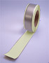
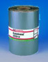
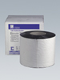

Гидроизоляционные ленты и пленки

Бостик-Грип 1182Bostik-Grip 1182
Бутиловая самоклеющаяся уплотнительная лента с нетканым или алюминиевым кашированием.
Для внутренних и наружных работ. Применяется для герметизации металлических и неметаллических строительных материалов, напр., в установках кондиционирования воздуха, вентиляционных сооружениях, для герметизации фасадов и крыш. Не даёт усадку, устойчива к старению и атмосферному воздействию, без запаха. Без растворителей и битумов.
Может поставляться рулонами длиной 20 м, толщиной 0,8мм и различной ширины до 200мм
Упаковка: длина - 20 м; ширина - 4 см, 5см, 6 см, 7,5 см, 10см

БатубандBatuband
Самоклеющаяся лента толщиной 1,5 мм покрытая гибкой плёнкой. Лицевая сторона снабжена специальным устойчивым к ультрафиолетовому облучению алюминиевым покрытием.
Герметизация мансардных окон, чердачных мансард, световых куполов и световых дорожек. Защита подоконных панелей, закраин и обрешётки крыш (Brustungspaneelen, Dachrandern und Dachleisten). Заделка проломов (проходок) крыши. Уплотнение швов между готовыми элементами. Ремонт свинцовых прокладок, водосточных желобов и водосточных труб. Ремонт битуминозных кровельных покрытий.
Общее: в силу своей эластичности и способности длительное время сохранять форму материал очень хорошо подходит для покрытия сложных деталей и соединений
Цвет: серый, алюминиевый
Упаковка: толщина 1,5 мм, длина 10м.
Ширина: 5 см, 7,5 см, 10 см, 15 см, 22,5 см, 30 см
 Грунтовка Батубанд
Грунтовка Батубанд
Batuband Primer
Грунтовка на основе битума для нанесения лент Батубанд и герметика Эласторуф на пористые основы.
Цвет: черный
Упаковка: 1 л, 5 л
Грунтовка SK
SK Voranstrich
Низковязкая битуминозная грунтовка с большой глубиной проникновения.
Наносится на сухие минеральные поверхности с любой впитывающей способностью (низкой, средней или высокой) для улучшения сцепления с поверхностью Гидроизоляционных пленок SK и Гидроизоляционной массы SK. Для слегка влажных оснований можно использовать Гидроизоляционную массу K 100.
Giscode ВВР 10
Расход: слабо впитывающие поверхности - ок. 0,25 л/м.кв.
впитывающие/шероховатые поверхности - 0,2 - 0,6 л/м.кв.
газобетон - 0,6 - 0,9 л/м.кв.
Хранение: в сухом и прохладном месте
Упаковка: ведро 5 кг, 10 кг, 25 кг
 Пленка армированная SK2000 Alu
Пленка армированная SK2000 Alu
SK 2000 Alu Dichtungsbahn
Кашированная алюминием, самоклеящаяся по всей поверхности, гидроизоляционная пленка на битумной основе. Применяется в холодном состоянии. Высокоэластичная. Долговечно устойчива к ультрафиолетовому излучению. Для небольших плоских крыш, крыш гаражей и т.п.
Расход: 1,05 м. кв./м.кв.
Хранение: в вертикальном положении, при температуре от 5 до 15 градусов Цельсия.
Упаковка: рулон 20 м.кв. (ширина 1,05 м, толщина 1,5 мм)
 Пленка армированная SK2000 Alu Grun
Пленка армированная SK2000 Alu Grun
SK 2000 Alu grun Dichtungsbahn
Кашированная алюминием, анодированным до зеленого цвета, самоклеящаяся по всей поверхности, применяемая в холодном состоянии, гидроизоляционная пленка на битумной основе. Высокоэластичная. Долговечно устойчива к ультрафиолетовому излучению. Укреплена тканью. Для небольших плоских крыш, крыш гаражей и т.п.
Расход: 1,05 м. кв./м.кв.
Хранение: В вертикальном положении, при температуре от 5 до 15 градусов Цельсия.
Упаковка: рулон 15 м.кв. (ширина 1,05 м, толщина 1,7 мм), рулон 20 м.кв. (ширина 1,05 м, толщина 1,5 мм)

Клейкая лента SKSK Klebestreifen
Высокоэластичная, двусторонняя, самоклеящаяся, применяемая в холодном состоянии битумная лента. Устойчива к старению. Шовная лента для герметизации соединительных швов зданий, примыканий труб и стыков стен. Также применяется для приклеивания защитных, дренажных и изоляционных плит на Уплотнительную пленку SK 2000 S и SK 3000S.
Упаковка: рулон 12 м (ширина 15 см, толщина 1,5 мм)
 Пленка SK3000 S
Пленка SK3000 S
Самоклеящаяся гидроизоляционная плёнка для круглогодичных гидроизоляционных работ. Применяется в холодном состоянии. Испытана согласно DIN 18 195. Предназначена для долговечной гидроизоляции подвалов, балконов, террас, сырых помещений, фундаментов и оснований мостов, сборных железобетонных изделий и т.п. от влажности грунта и воды без давления (в некоторых конструкциях - от воды под давлением). Водонепроницаема, включая ливневые дожди, сразу же после наклеивания. Работы можно проводить при температуре до -5 градусов Цельсия.
Каширование: Высокопрочная на разрыв, крестообразно ламинированная HDPE -пленка.
Расход: 1,05 м. кв. /м.кв.
Хранение: в вертикальном положении, при температуре от 5 до 15 градусов Цельсия.
Упаковка: рулон 20 м.кв. (ширина 1 м, толщина 1,5 мм)